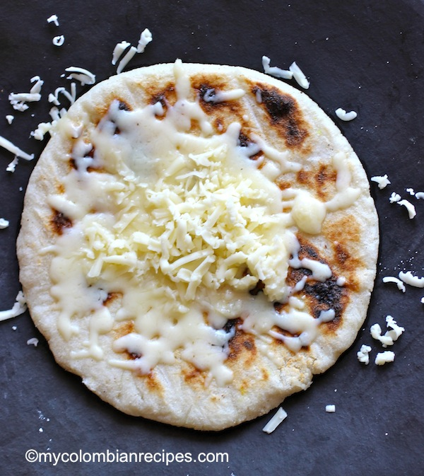

Description
This is a Colombian/Velenzuelan staple that is super easy to make as a side, or as a simple snack! This recipe was originally published on MyColombianRecipes.com.

Ingredients
1 cup pre-cooked white or yellow arepa flour or cornmeal
⅓ cup white or mozzarella cheese, grated
Instructions
- Combine the cornmeal, warm water, cheese, 1 tbsp butter and salt, mixing thoroughly. Let mixture stand for five minutes.
- Knead with your hands for about 3 minutes moistening your hands with water as you work.
- Form 4 small balls with the dough. Place each ball between 2 plastic bags and with a flat pot cover flatten to ½ inch.
- Add the butter to a nonstick pan over medium heat. Place the arepas in the pan, and cook about 3 minutes on each side, until a crust forms or they are golden brown.